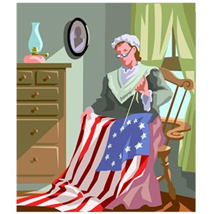

How would you fix this run-on?
Betsy Ross was a seamstress who sewed
the first American flag, in addition, she
sewed ruffles on George Washington’s
shirt cuffs.

Ruffles! No way!
That was
the style,
dude!
INSTRUCTOR: Ben is right. That was the style.